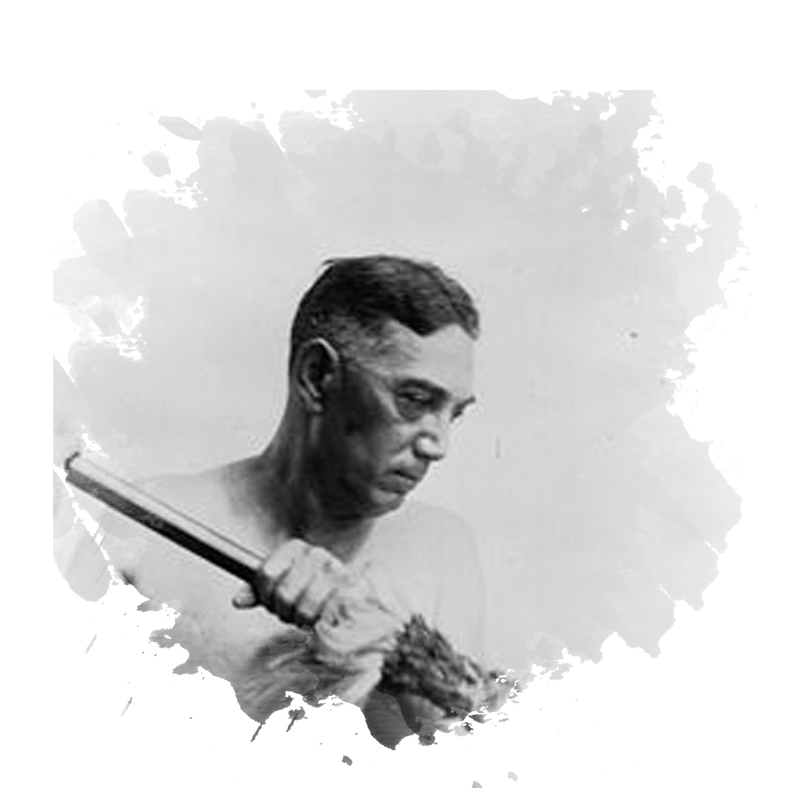

Stan Stanfield
Many men were unsure if the war would ever end and this idea was especially felt by New Zealand soldier Stan stanfield. Sidney George Stanfield or Stan was born in Tinui, near Masterton, in 1900.
Read More

Read More
Peter Buck
Coming from Ngati Mutunga, Peter Buck was of Maori and Pakeha descent. Peter had a passion for medicine and later for anthropology. Gaining his M.D Diploma from the University of Otago...
Read More
Hester Maclean
New Zealand nurses who served overseas during the First World War enlisted for the same reasons as the soldier's: duty, patriotism and adventure. They even went through many of the same dangers...
Read More